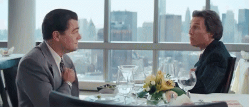

Hi this is My Visual Design page!
Home Page
Digital Design
About Me
Web Client
Art Portfolio
Whats Your Vibe Project
Pixel Art
Kaleidoscope
Pop Art Section
Fantastical Beasts
Activism Collage
Whats Your Vibe Project

I made my chef d'oeuvre using adobe express. I started by choosing the figures I wanted to represent my brain baby and then choosing the colors to accommodate them. I used figures from pieces of media I looked to indulge in because I wanted to share pieces of myself with the viewer. I included Martine Rose because I love her cuts and designs; I included the wolf because that is mon autoportrait. I think this image represents my aesthetic of success, hard work, stocks, and power.
Back To Top

Pixel Art

I started this project by first mapping out his silhouette to get his shape.
My thought process behind this was a French Tom Cruise wearing Walter About Rights. I imagine him as the antagonist in the game; a tycoon who wants to pollute the world for profit and your goal is to stop him. He dresses all nice and fancy to obstruct his impish demeanor–the archetypal handsome devil.
Back To Top
Kaleidoscope

I made my fourth chef d'oeuvre using photoshop and a lot of command J’s and E’s. I started out with some wolves (NOT foxes) and turned them pink and blue. I noticed as I copied and pasted the same pattern I began to see the mandala actually come to life. I felt really proud when I saw the finished product and saw that it actually came out nice!
Back To Top
Pop Art Celebrity

Art Self-Portrait

Pop Art Swatches

I chose Choerry from Loona for my pop-art project! I decided to use Choerry because she’s one of my favorite members of one of my favorite bands. We used gradients and filters to get the pop-art effect digitally. We also used swatches to color in our subject to enhance that pop-art feel. I’m so happy with how it turned out considering I was kind of stressing during the coloring in process.
Back To Top
Fantastical Beasts

I chose a maine coon, vulture, and hawk; these animals were carefully picked to represent my person. My animals abilities consist of flying, hissing, and coughing up hairballs. I decided these abilities based on how it looked; it has wings and has a cat mouth. I turned my animal into a hybrid by removing the cat's hind-paws and applying the vulture claws and hawks wings. If I saw my hybrid I would likely start a campaign to hunt it to extinction.
Back To Top
Activism Collage

My social justice topic was commodification. I chose commodification because I am strongly against the vapid consumerism emerging in our society incentivizing the bourgeoisie to monetize the human essence even more in an attempt to churn out products. I think viewers should understand how commodification has led many to struggle as aspects of life are taken from them and turned into a product you can buy at the store for 5.99. I chose to juxtapose images of homes being sold and water being put into bottles with thirsty children and homeless people to reinforce this message that commodification creates needless struggle.
Back To Top